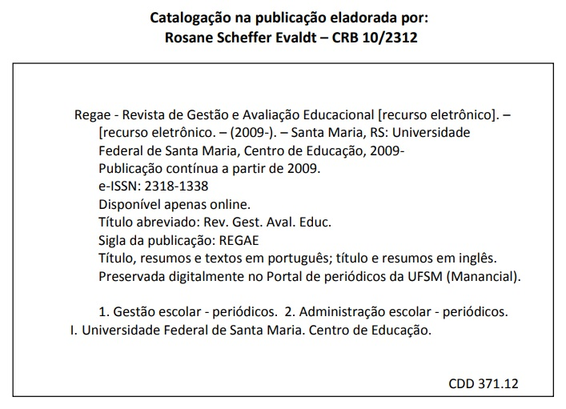

Regae: Revista de Gestão e Avaliação Educacional

 Regae: Revista de Gestão e Avaliação Educacional
Regae: Revista de Gestão e Avaliação Educacional
Publicação de: Universidade Federal de Santa MariaÁrea: HUMAN SCIENCES

Sobre o periódico
A Regae: Revista de Gestão e Avaliação Educacional, é mantida pela Universidade Federal de Santa Maria – UFSM. É publicada no Brasil, desde 2009, e tem como cobertura temática as áreas de administração escolar, gestão escolar, políticas educacionais, avaliação educacional e avaliação institucional. A sua missão é constituir-se num veículo de divulgação de estudos do campo da educação. O público alvo é constituído por professores, estudantes, pesquisadores e dirigentes de instituições escolares. A Regae está hospedada no portal de periódicos da Universidade Federal de Santa Maria, no endereço http://periodicos.ufsm.br/regae/index, e apresenta-se em formato online. O processo de submissão, avaliação, edição e publicação é feito por meio do Sistema Eletrônico de Editoração de Revistas, tradução licenciada do Open Journal Systems – OJS. O título abreviado do periódico, que deve ser usado em bibliografias, notas de rodapé, referências e legendas bibliográficas é Regae: Rev. Gest. Aval. Educ. |
|
A Regae é apresentada no formato de publicação contínua. |
|
A Regae dispõe de divulgação no Youtube – https://www.youtube.com/@regae-revistadegestaoeaval9441/featured – e no Facebook – https://www.facebook.com/revistaregae. |
Todo o conteúdo do periódico, exceto onde estiver identificado, está licenciado sob uma licença Creative Commons: Atribuição-NãoComercial-SemDerivações 4.0 Internacional - CC BY-NC-ND 4.0. Por acesso aberto, entende-se a disponibilização gratuita na Internet, para que os usuários possam ler, fazer download, copiar, distribuir, imprimir, pesquisar ou referenciar o texto integral dos documentos, processá-los para indexação, utilizá-los como dados de entrada de programas para softwares, ou usá-los para qualquer outro propósito legal, sem barreira financeira, legal ou técnica. |
Taxas para submissão e publicação de textos
Não são cobradas taxas por textos publicados e, tampouco, pelos submetidos para avaliação, revisão, publicação, distribuição ou download. |
É obrigatório o cadastro do número no Orcid: https://orcid.org/. |
Todos os artigos publicados na Regae recebem um número DOI. |
Declaração da ética da publicação e de má prática
No âmbito da Regae, prima-se pelas práticas de respeito à conduta ética, seguindo as recomendações do Comitê de Ética em Publicações - Cope -, que podem ser encontradas em http://publicationethics.org/resources/guidelines. Assim, os editores esforçam-se para evitar e prevenir a publicação de artigos em que tenha ocorrido má conduta na pesquisa; em nenhum caso incentiva-se más condutas ou permite-se que elas aconteçam; qualquer alegação de conduta imprópria de pesquisa serão averiguadas; há disposição para publicar correções, erratas, esclarecimentos, direito de resposta, retrações e desculpas, quando necessário. |
Autores são aqueles que contribuíram, de modo substancial e direto, no desenho e elaboração do artigo; participaram da análise e interpretação dos dados; participaram da redação, revisão de versões, revisão do conteúdo e aprovação da versão final; concordaram que são responsáveis pela exatidão e integridade de todo o trabalho. Solicita-se o uso da taxonomia de funções de contribuidor para representar as respectivas contribuições para o texto: http://credit.niso.org. |
|
Plágio é o ato de assinar ou apresentar como seu conteúdo intelectual da obra de outra pessoa ou grupo. São consideradas plágio as seguintes atitudes: citar textualmente o trabalho de outra pessoa, sem a devida citação da fonte; parafrasear o trabalho de outra pessoa, alterando algumas das palavras, ou a ordem das palavras, sem a devida citação da fonte; usar as idéias de outra pessoa, sem referência ao autor; recortar e colar da Internet, sem a devida citação da fonte. Os proponentes devem garantir a originalidade dos manuscritos e, caso utilizem artigos de outros autores, que eles sejam devidamente citados. |
Conflito de interesse, é a situação em que os autores possuem interesses capazes de influir no processo de elaboração dos manuscritos. São conflitos de natureza diversa - pessoal, comercial, política, acadêmica ou financeira - a que qualquer um pode estar sujeito, razão pela qual, quando presentes, os autores devem reconhecer e revelar. |
Os autores devem declarar todas as fontes de financiamento ou suporte – institucional ou pessoal –, para a realização do estudo. Deve-se identificar o nome da instituição ou da pessoa. |
Quando desejável e pertinente, recomenda-se a nomeação, em nota de rodapé, das pessoas que colaboraram para com a elaboração do estudo, embora não preencham os critérios de autoria. Os autores são os responsáveis pela obtenção da autorização dessas pessoas, antes de nomeá-las em seus agradecimentos. Também podem constar agradecimentos a instituições, pelo apoio financeiro ou logístico à realização do estudo. Devem-se evitar os agradecimentos impessoais. |
As informações acerca do autor devem ser informadas no perfil cadastrado no sistema do periódico e requeridos pelo ambiente Seer/OJS. Deve-se observar, em especial, o nome completo e sem abreviaturas, e-mail, vinculação institucional; resumo da biografia, número de cadastro no Orcid. |
|
 |